China Employee Termination in 2026: Pulse Decision-Tree Sprint Brief for Foreign Employers
Key takeaways
- In China employee termination, execution quality depends on choosing the right branch early, then locking payroll and communication before outreach.
- Foreign employers can reduce dispute exposure by using a short decision-tree sprint rather than ad-hoc parallel workstreams.
- The critical fail point is usually not legal knowledge; it is branch drift between legal route, payout logic, and manager scripts.
- A three-gate tree (Route Gate -> Payroll Gate -> Communication Gate) improves speed and defensibility together.
- This is a Pulse-style impact brief, with legal depth moved to an appendix.
What changed and why this matters now
Multinational teams often treat China terminations as linear checklists. But real cases behave more like branching paths: one fact change can invalidate earlier decisions across legal, payroll, and communication layers. If teams do not re-branch quickly, they continue executing on an outdated path.
This run rotates to a decision-tree sprint format. Instead of broad guidance, it gives fast branching logic for cross-functional teams under time pressure. The objective is to prevent “false progress,” where activity looks fast but risk is increasing behind the scenes.
Plain-language legal context first
China’s termination framework requires route-consistent execution. For foreign clients, this means the reason for termination, evidence set, payout method, and communications must point to the same factual and legal story. If any layer diverges, challenge risk rises.
National law establishes core boundaries, but practical outcomes are city-sensitive. That is why every branch decision in the tree should include a local interpretation check before external communication.
Pulse decision tree: three gates in one sprint
Gate 1 — Route branch decision
Question: Is the selected route supportable by current evidence quality?
- Branch A (Go): evidence is coherent, chronology complete, contradictions resolved.
- Branch B (Hold): evidence mostly complete but needs targeted remediation.
- Branch C (Switch): evidence does not support selected route; move to alternative route or negotiated pathway.
Foreign-employer implication: avoid importing “at-will” instincts from other jurisdictions. Branch C is not failure; it is controlled risk management.
Gate 2 — Payroll and IIT branch decision
Question: Is payout logic finalized and route-aligned?
- Branch A (Go): one locked worksheet, tax assumptions documented, approvals complete.
- Branch B (Hold): core numbers stable but tax treatment needs final confirmation.
- Branch C (Reset): multiple worksheet versions or unresolved component logic.
Foreign-employer implication: communication should never proceed from Branch B or C.
Gate 3 — Communication branch decision
Question: Are scripts and spokesperson guidance synced with latest route and payout assumptions?
- Branch A (Go): final scripts approved, spokesperson briefed, escalation language ready.
- Branch B (Hold): scripts exist but not refreshed after recent updates.
- Branch C (Reset): scripts materially conflict with approved legal/payroll position.
Foreign-employer implication: script drift can become evidentiary drift in disputes.
Sprint control rule
A case can only proceed to employee-facing action when all three gates are at Branch A. Any Branch C triggers immediate branch reset and a cross-functional refresh cycle.
Why this works for foreign employers
Foreign teams often lose time in cross-border approvals. A branch model keeps meetings short and decisions concrete: which branch are we in, what is the blocker, who owns branch movement, and by when? It replaces broad debate with operational clarity.
It also supports executive oversight. Leadership can track branch distribution across active cases to see systemic weaknesses—such as repeated payroll resets or persistent script refresh failures.
Practical scenarios
Scenario A: evidence shift after internal approval
HR receives late documentation that weakens the original route assumptions.
Tree outcome: Gate 1 moves from Branch A to Branch C.
Action: trigger route switch workflow; freeze downstream payroll and script activities until new route confirmed.
Scenario B: payroll mismatch before manager briefing
Legal route is stable, but payroll has two active worksheet versions.
Tree outcome: Gate 2 at Branch C.
Action: appoint single worksheet owner, consolidate to vFinal, rerun approvals before any communication.
Scenario C: script lag after payout update
Payout logic changes, but manager script still uses prior assumptions.
Tree outcome: Gate 3 at Branch B/C.
Action: refresh script pack, complete manager re-brief, and log acknowledgment before outreach.
Daily operations SOP (role-by-role)
HR case owner: runs gate checks daily during active sprint; records branch status and blockers.
Legal/compliance owner: validates Gate 1, defines route-switch triggers, and confirms local interpretation sensitivity.
Payroll owner: governs Gate 2 with worksheet version control, IIT notes, and approval completion.
Manager owner: executes Gate 3 by using approved scripts only and escalating deviations immediately.
Vendor/EOR partner: supports local execution consistency and closure evidence quality.
Document checklist with timing cues
- Route stage: route memo, chronology ledger, contradiction log, locality note.
- Payroll stage: vFinal worksheet, payout component rationale, IIT assumption memo, approval chain.
- Communication stage: script pack, spokesperson assignment, escalation fallback statements.
- Closure stage: payment proof, final case memo, archive index, retrieval-test record.
Exception handling playbook
- Route branch conflict: downgrade to Branch C and initiate cross-functional reset.
- Late tax ambiguity: hold at Gate 2 Branch B until local tax interpretation is documented.
- Manager off-script event: pause further communication, issue corrected script, and capture incident log.
- Archive gap post-close: reopen closure gate and complete retrieval test before final sign-off.
System implementation notes
Configure workflow tools with mandatory gate and branch fields, plus hard dependencies: Gate 3 tasks cannot open until Gate 2 is Branch A, and Gate 2 cannot finalize while Gate 1 is Branch B/C. In payroll tooling, enforce immutable worksheet version IDs and approval timestamps.
Build a weekly branch dashboard: cases at each branch by gate, average time in non-A branches, and repeat blocker categories. This helps identify whether issues are legal, payroll, or communication-driven.
Common mistakes and prevention
- Mistake: treating branch changes as administrative noise.
Prevention: require explicit branch-change logs with owner and reason.
- Mistake: running payroll and scripts in parallel before route stability.
Prevention: gate dependency controls in workflow system.
- Mistake: “final” worksheet without tax assumptions note.
Prevention: make IIT memo mandatory for Gate 2 Branch A.
- Mistake: closure without retrievability standard.
Prevention: closure gate includes retrieval test and archive index.
What to do now
Adopt the three-gate decision tree for every active China termination matter this week. During each case huddle, label the branch for Gate 1-3 and assign one blocker-removal owner per non-A branch. Treat Branch C as a control event, not a delay.
Then publish a simple KPI board for leadership: percentage of cases reaching all-A status before communication, number of branch resets per case, and post-communication correction incidents. This creates fast feedback and supports continuous improvement.
What to watch next
- Repeated Gate 2 Branch C events (signal of payroll governance weakness).
- Gate 3 lag after legal/payroll updates (signal of communication control weakness).
- Increasing branch-reset frequency in certain cities or business units.
FAQ
1) Is the decision tree too rigid for real cases?
No. It is flexible in path choice, but strict on control dependencies.
2) Can we proceed if one gate is still Branch B?
For employee-facing actions, no. Branch B means known unresolved risk.
3) Which gate fails most often in practice?
Payroll/IIT lock issues at Gate 2 are a common cross-functional failure point.
4) How often should branch status be reviewed?
At least daily during active cases and after any material fact update.
5) Does this replace local legal advice?
No. It is an operational framework and must be paired with local legal/tax advice for material decisions.
6) What proves this model is working?
Fewer branch resets late in the cycle and lower post-communication correction rates.
Legal depth appendix (secondary)
This brief is grounded in the PRC Labor Contract Law baseline and supplemented by practitioner and payroll references commonly used by multinational employers. The model is operational rather than jurisdiction-specific legal advice. Case outcomes remain dependent on local implementation and factual record quality.
For significant or contested cases, route design, payout treatment, and communication language should be reviewed with qualified local advisors.
Soft CTA
If your team needs a compliance-first workflow for China employee termination, China-Payroll.com can help implement decision-tree controls, payroll lock governance, and defensible case-closure standards.
Disclaimer
This content is informational only and does not constitute legal, tax, or employment advice.
Sources
- National People’s Congress of China, Labor Contract Law of the PRC (English), accessed 2026-03-07: http://www.npc.gov.cn/zgrdw/englishnpc/Law/2007-12/13/content_1384064.htm
- ICLG, Employment & Labour Laws and Regulations: China, accessed 2026-03-07: https://iclg.com/practice-areas/employment-and-labour-laws-and-regulations/china
- Littler, Key Recent Developments in China’s Employment Law, accessed 2026-03-07: https://www.littler.com/news-analysis/asap/key-recent-developments-chinas-employment-law-china-us-comparative-perspective
- PwC Tax Summaries, China Individual — Taxes on Personal Income, accessed 2026-03-07: https://taxsummaries.pwc.com/peoples-republic-of-china/individual/taxes-on-personal-income
- China Briefing, China Human Resources and Payroll Guide, accessed 2026-03-07: https://www.china-briefing.com/doing-business-guide/china/human-resources-and-payroll
Need local employment support in China?
If you need a compliance-first partner for hiring, payroll, and risk controls in China, China-Payroll.com can help evaluate the right setup.
Image Prompt Pack
Create a 16:9 hero image for article title: 'China Employee Termination in 2026: Pulse Decision-Tree Sprint Brief for Foreign Employers'. Scene: global operations team evaluating workforce model options for China market entry. Include motifs: decision matrix, …